Proto jsme zde pro vás připravili detailní návod, jak vše zprovoznit. Není to nic těžkého, do 10 minut budete mít vše hotové a s jakýkoliv problémem nám můžete napsat!
Potřebné soubory
- Forge installer 1.16.5 zde - Minecraft, který podporuje módy.
- Create 1.16.5 zde
- Mumble link 1.16.5 zde - Mód na propojení voice chatu.
- Mumble zde - Samostatný program, zodpovědný za voice chat.
Forge
Po stažení všech souborů nainstalujeme minecraft verzi, která podporuje módy:
Forge 1.16.5-36.0.22
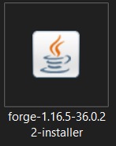
Forge je potřeba nainstalovat, po spuštění se zobrazí možnosti instalace:
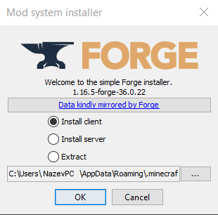
Nechte vybraný Install client, umístění minecraftu by mělo být ze základu správně. Klineme na ok:
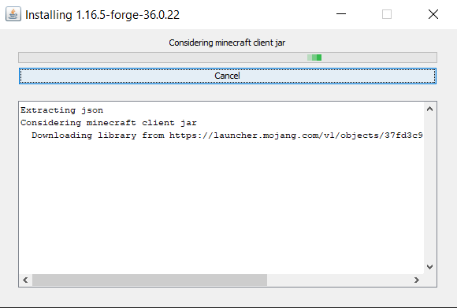
Instalování Forge Minecraftu bude chvíli trvat, zobrazí se zpráva, že instalace byla úspěšná.
Následně zapněte jakýkoliv launcher, který máte a zapněte verzi minecraftu Forge. První zapnutí této verze připraví důležité soubory a složky.
Po tom, co se minecraft zapne a načte by mělo hlavní menu vypadat nějak takto:
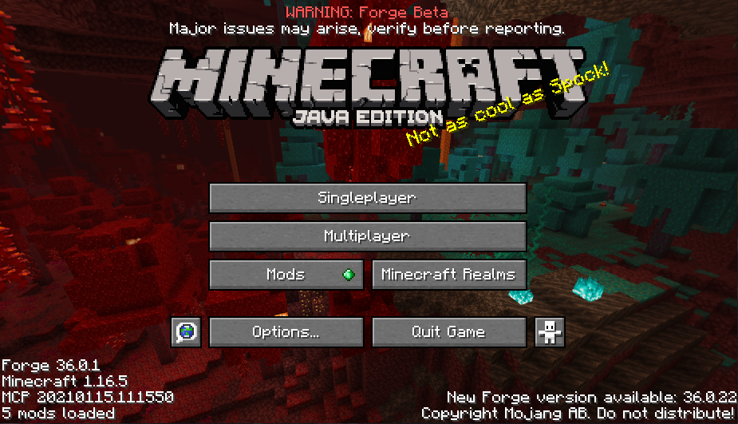
Po načtení můžeme minecraft zas vypnout a máme první krok za sebou!
Mumble
Nyní ten nejsložitější krok: Mumble.
Bohužel, minecraft v době vytváření serveru nemá žadný mód pro voice chat vestavěný v sobě, proto je potřeba používat externí voice chat přes program.
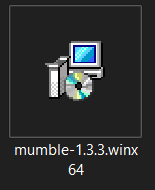
Nejdříve nainstalujeme mumble, spustí se standardní instalační okno:
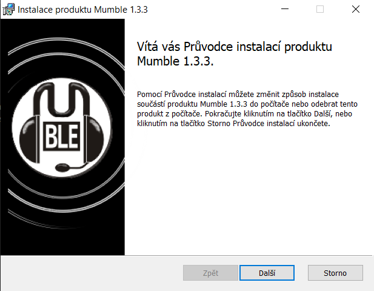
klikneme na Další, zaškrtneme souhlas s podmínkami a znovu klikneme na další:
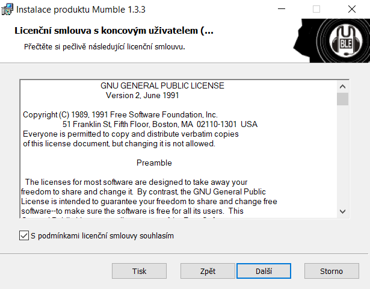
Dále se zobrazí několik standardních oken instalace, zde se nic měnit nemusí ale můžete změnit kam se má Mumble nainstalovat:
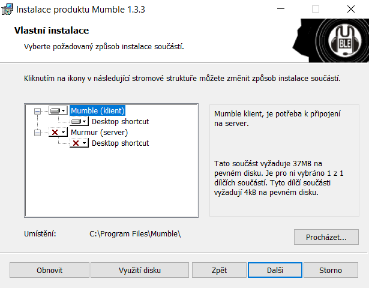
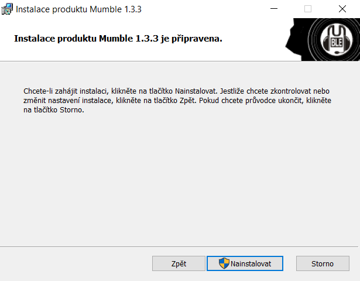
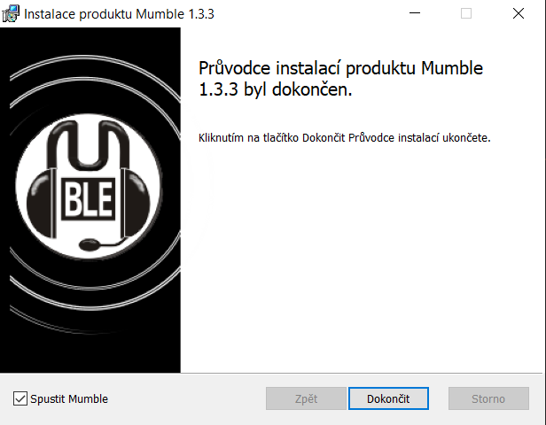
Po tom co kliknete na Dokončit by se vám měl zapnout Mumble:
Nastavování Mumble
Po tom co se mumble zapne, ukáže se okno na testování zvuku, jednoduše se dá přeskoči a není potřeba nic měnit.
Aby voice chat fungoval a aby byl správně nastaven.
Musíme jít do nastavení:
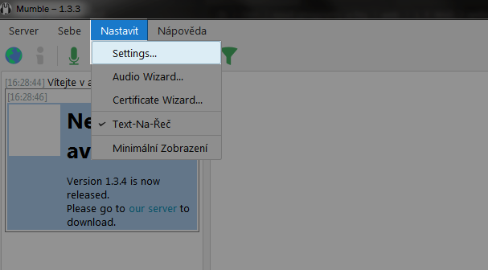
Následně musíme jít do Výstupu zvuku:
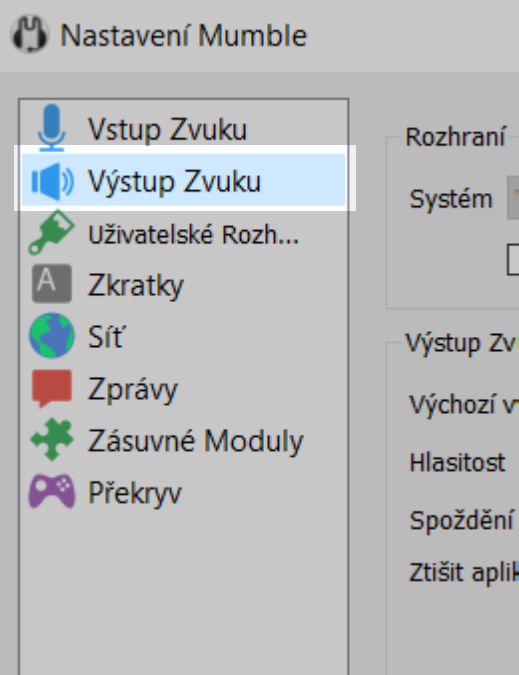
A teď je potřeba nastavit následující nastavení zvuku zvýrazněné na obrázku:
- Zaškrtnutý poziční zvuk
- Zaškrtnutá sluchátka u pozičního zvuku
- Minimální vzdálenost - cca 1m
- Bloom - cca 150%
- Maximální vzdálenost - cca 30m
- Minimální hlasitost - přesně 0%
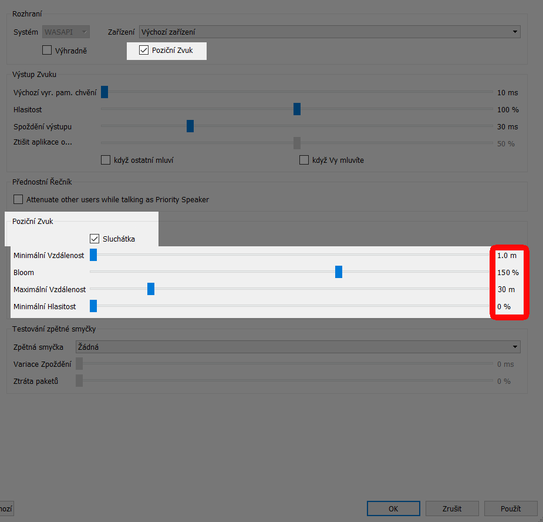
Toto nastavení je na základě našich zkušeností pro zážitek nejlepší.
Pokud máte jakýkoliv problém, klidně nám napište!
Teď se přesuneme na záložku Zásuvné moduly
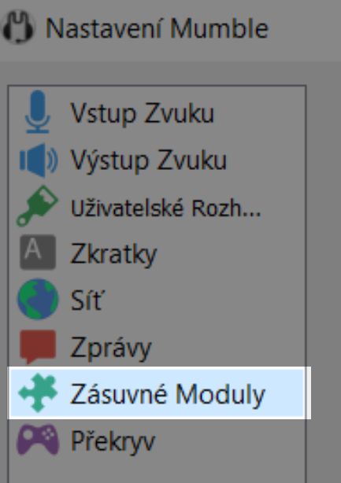
Nyní musíme nastavit, aby mumble detekoval voice chat v minecraftu:
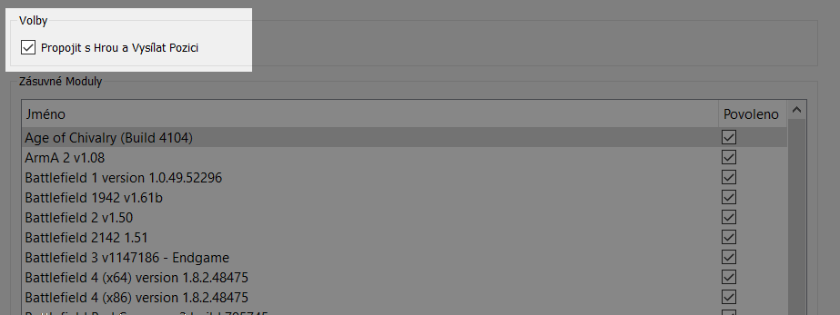
A tady musíme zaškrtnout Propojit s hrou a vysílat pozici
Bez toho voice chat nebude fungovat
No, a máme nejšložitější část za sebou! Teď nás čekají poslední dva kroky:
- Dát stažené módy do minecraftu
- Přidat a připojit se na Mumble server
Módy
Máme sice nainstalovaný Forge minecraft, ale zatím v něm nejsou žádné módy.
První krok je si otevřít soubory minecraftu.
Otevřeme dokumenty a nahoru do cesty umístění napíšeme:
%appdata%
A stiskneme Enter
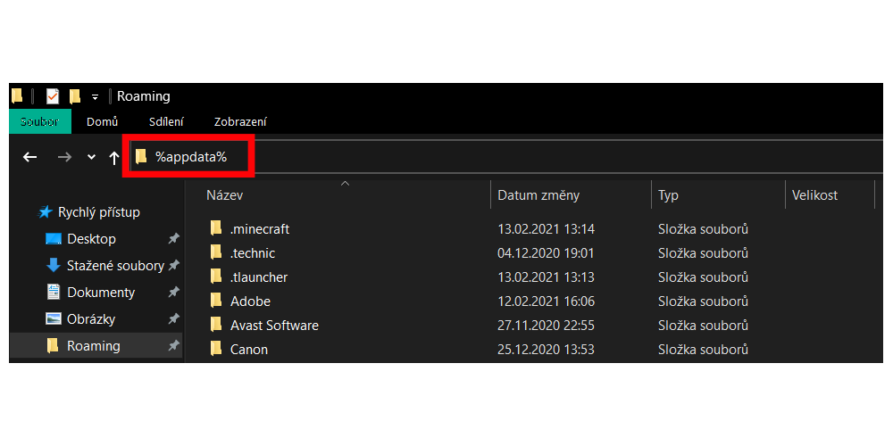
Měla by se otevřít složka Roaming, v té bude složka .minecraft, tu otevřeme:
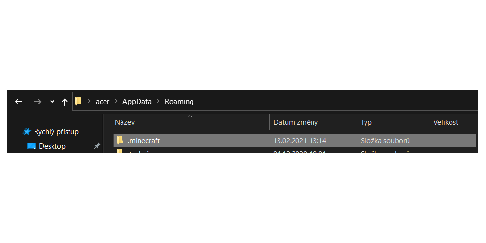
Ve složce minecraftu bychom měli mít složku mods, pokud ne vytvořte jí
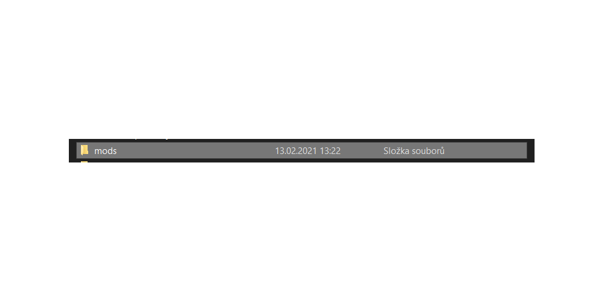
Následně do ní vložte oba módy co jste na začátku stáhli:
- create-mc1.16.3_v0.3e
- mumblelink-1.16.5-4.6.3
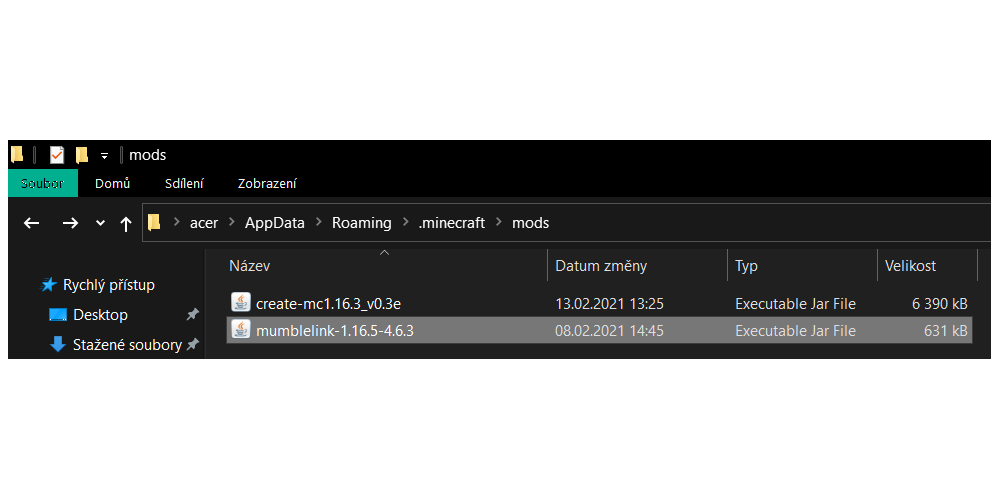
Tak, a to byl předposlední krok.
Mumble server
Teď už se jen stačí připojit na voice chat server.
Bohužel Mubmle nedokáže fungovat přes minecraft server a tak se musíte zvlášť připojovat na server v minecraftu a zároveň na server v Mumble.
Nyní si přidáme do mumble server, podobně jako v minecraftu:
Klikneme na tlačítko Server na horním panelu a pak na tlačítko Connect... :
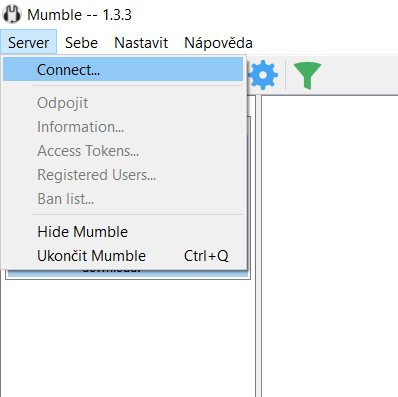
Ukáže se okno se servery, zde klikneme na tlačítko Přidat nový... :
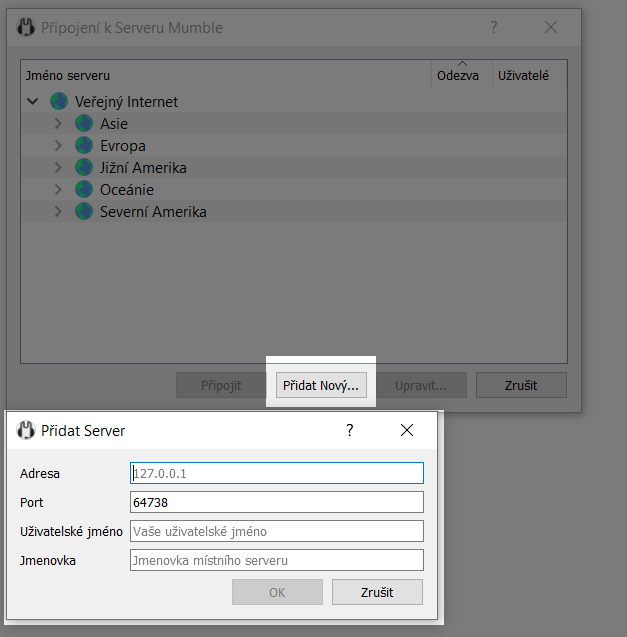
Zde zadáme údaje serveru, jméno a název serveru:
- Adresa: mumble-de.cleanvoice.com
- Port: 39482
- Uživatelské jméno: váš minecraft nickname
- Jmenovka může zůstat stejná, je to název, pod kterým se server uloží
Teď můžete otestovat, zda-li Mumble funguje správně, zapněte minecraft a připojte se na server v Mumble, následně se stačí připojit na server, nebo na singleplayer svět v minecraftu, pokud vám Mumble napíše do konzole Minecraft propojen
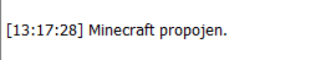
...tak máte hotovo a můžete začít hrát!
Ip adresa minecraft serveru:
157.90.34.58:25753
...pokud vám něco nefunguje, nebo si jen nejste jistí, jsme více než ochotni vám pomoct, stačí napsat!